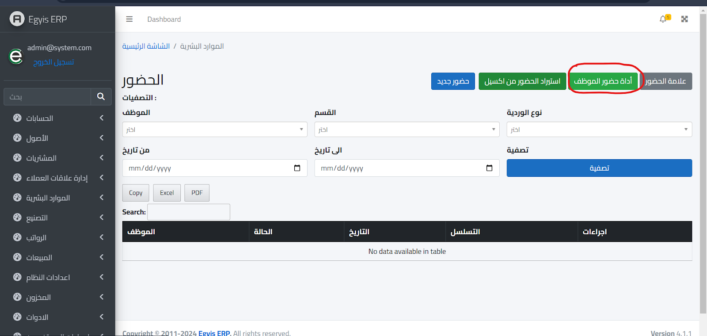
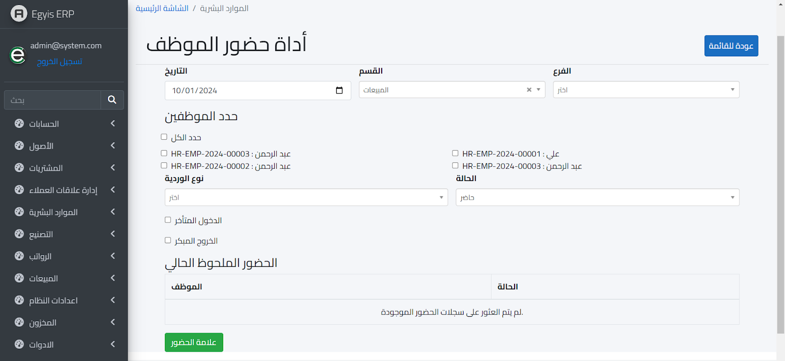
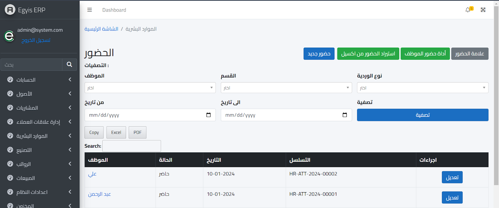
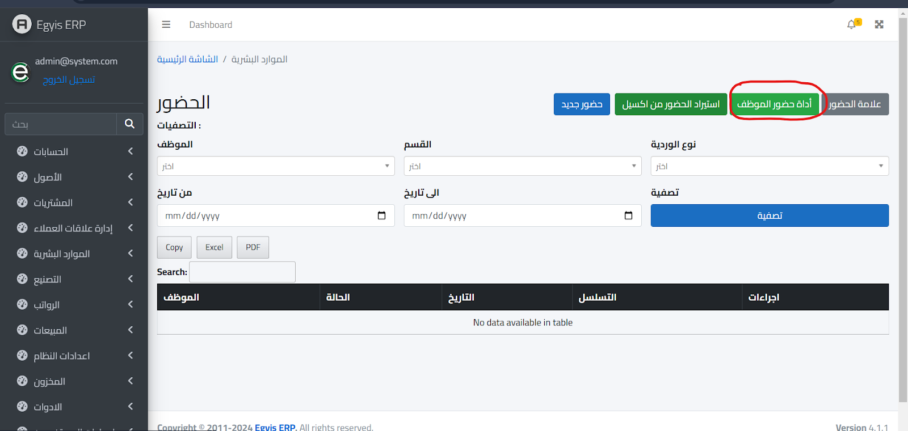
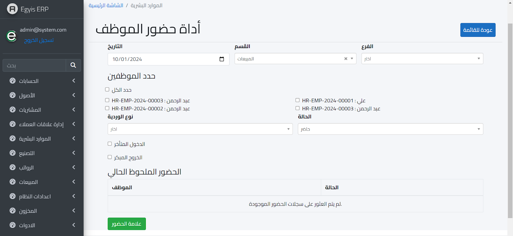
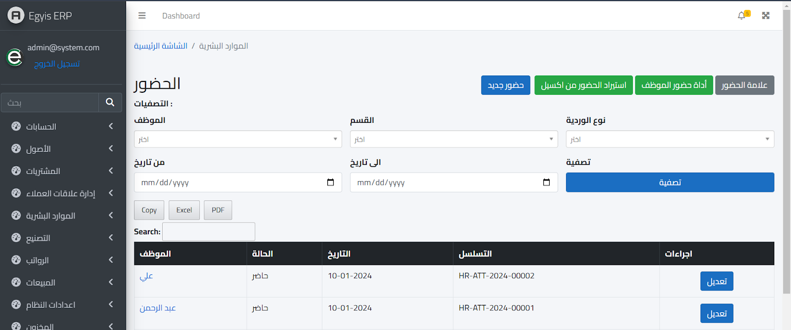

أداة حضور الموظف :-
ويمكن تسجيل حضور أكثر من موظف في نفس الوقت عن طريق اختيار قائمة أداة حضور الموظف كالتالي :
ثم بعد ذلك تظهر الشاشة التالية :
ثم بعد ذلك نضغط علامة الحضور وسيتم تسجيل حضور الموظفين المرادين وبعد ذلك يظهر كالتالي :
ويمكن تسجيل حضور أكثر من موظف في نفس الوقت عن طريق اختيار قائمة أداة حضور الموظف كالتالي :
ثم بعد ذلك تظهر الشاشة التالية :
ثم بعد ذلك نضغط علامة الحضور وسيتم تسجيل حضور الموظفين المرادين وبعد ذلك يظهر كالتالي :
